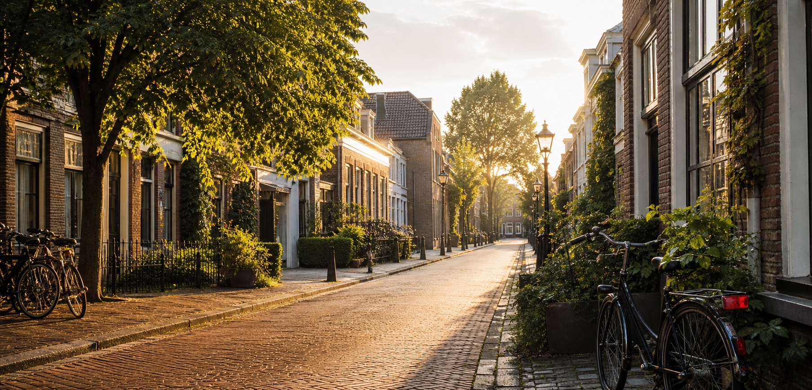

De buurt
Vertel iets persoonlijks over de buurt en waarom deze plek belangrijk is.
Een bekend model uit Amsterdam
Op deze plek deel ik mijn verhaal, mijn blik op Amsterdam en de kleine dingen die deze stad bijzonder maken.
Lees mijn verhaal
Even voorstellen
Model Jan Drieshout woont in Amsterdam en voelt zich verbonden met de mensen, straten en verhalen van de omgeving. Voeg hier een eerlijk en uniek persoonlijk verhaal toe van ongeveer 150 woorden.
Lokale favorieten
Vertel iets persoonlijks over de buurt en waarom deze plek belangrijk is.
Beschrijf een lokale verbinding, vereniging of terugkerende ontmoeting.
Deel een positieve wens of initiatief voor Amsterdam.
Bekijk de verhalen uit Amsterdam of ga naar de contactpagina.